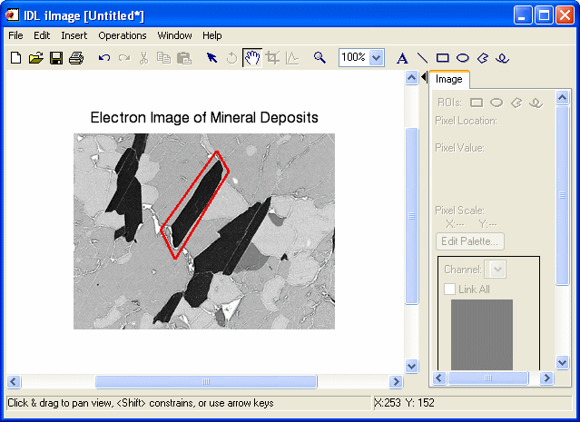

IPOLYGON, Points [, /DATA | , /DEVICE | , /NORMAL] [, IDENTIFIER=Variable] [, PROPERTY=Value] [, TARGET_IDENTIFIER=iToolID] [, TOOL=iToolID] [, /VISUALIZATION]
The vertices of the polygon. Points is either a vector of two-element vectors [[x1, y1], [x2, y2] ...] a 2-D array of points, or a 3-D array of points. Unless a 3-D array is specified, a 2-D polygon is created. Locations are specified in normalized coordinates unless the DATA or DEVICE keyword is set.
Any property of a polygon annotation can be set using this routine. To set the value of a property, specify the property name as a keyword set equal to the appropriate property value. See ISETPROPERTY for details.
Set this keyword if the input arguments are specified in data coordinates.
Set this keyword if the input arguments are specified in device coordinates (pixels).
Set this keyword to a named variable that will contain the full identifier of the newly-created object.
Set this keyword if the input arguments are specified in normalized [0, 1] coordinates (the default).
Set this keyword to the iTools identifier of an object that is contained in the data space into which the polygon object should be placed. If a value is not supplied, the first data space in the current view is used.
Set this keyword to the iTools identifier of the iTool in which TARGET_IDENTIFIER is found. If a value is not supplied, the current iTool is used.
Set this keyword to add the object to the data space. The default behavior is to add the annotation to the annotation layer.
In the following example, we draw a polygon around a feature in the iImage iTool. Since we draw the polygon in the data space, the polygon resizes smoothly with the image.
; Opening the data file
file = FILEPATH('mineral.png', $
SUBDIRECTORY = ['examples', 'data'])
data = READ_PNG(file)
; Create an iTool with the image data
IIMAGE, data, TITLE = 'Electron Image of Mineral Deposits', $
IDENTIFIER = iToolID
; A polygon surrounding a crystal, in data space coordinates
coords = [[160, 198], [98, 111], $
[114, 78], [173, 175]]
; Write the polygon to the iTool's data space
IPOLYGON, coords, /DATA, VISUALIZATION = iToolIDpolygonID = IGETID('polygon')
; Make the polygon boundary more visible, and interior transparent
ISETPROPERTY, polygonID, THICK=3, COLOR=[240,0,0], $
FILL_BACKGROUND=0

|
7.1 |
Introduced |